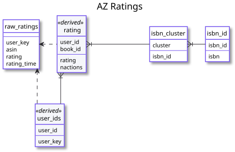

Amazon Ratings#
The Amazon reviews data set consists of user-provided reviews and ratings for a variety of products.
Currently we import the ratings-only data from the Books segment of the 2014 data set.
If you use this data, cite the paper(s) documented on the data set web site.
Imported data lives in the az schema. The source files are not automatically downloaded.
Data Model Diagram#

{kind=link}
Import Steps#
The import is controlled by the following DVC steps:
schemas/az-schema.dvcRun
az-schema.sqlto set up the base schema.import/az-ratings.dvcImport raw BookCrossing ratings from
data/ratings_Books.csv.index/az-index.dvcRun
az-index.sqlto index the rating data and integrate with book data.
Raw Data#
The raw rating data, with invalid characters cleaned up, is in the az.raw_ratings table, with
the following columns:
- user_key
The alphanumeric user identifier.
- asin
The Amazon identification number for the product; for a book with an ISBN, this is the ISBN.
- rating
The book rating. The ratings are on a 1-5 scale.
- rating_time
The rating timestamp.
Extracted Rating Tables#
We extract the following tables for Amazon ratings:
user_idsMapping from Amazon’s alphanumeric user identifiers to numeric user IDs.
ratingRating values suitable for LensKit use, with numeric user and item identifiers. The ratings are pre-clustered, so the book IDs refer to book clusters and not individual ISBNs or editions. This table has the following columns:
user_idThe user ID.
book_idThe book code for this book; the cluster identifier if available, or the ISBN-based book code if this book is not in a cluster.
ratingThe rating value; if the user has rated multiple books in a cluster, the median value is reported.
nactionsThe number of book actions this user performed on this book. Equivalent to the number of books in the cluster that the user has rated.